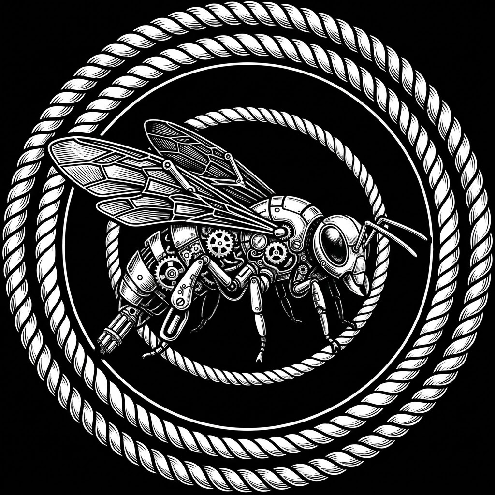

Neonové prstence Nového Berlína pulzovaly v rytmu binárního deště, ale Ruda Müller stál na střeše svého posledního projektu — sedmsetmetrového mrakodrapu Aegis — a díval se opačným směrem. Tam, kde končila atmosférická kupole města a začínaly syrové, neuro-kontaminované hory starého světa.
Ruda byl jiný. V éře, kdy budovy navrhovaly kvantové algoritmy, on stále kreslil první linie ručně, implantovaným stylusem přímo do své zrakové kůry. Jeho mrakodrapy nebyly jen stavby; byly to obří chladiče pro megasíť, tektonické chrámy z uhlíkových vláken a chromu. A stejně divný jako jeho architektura byl i jeho život. Zatímco ostatní korporátní elity trávily čas v polévce virtuálního hedonismu, Ruda běhal.
Neběhal na trenažérech. Běhal maratony v toxických zónách, bez kyslíkové masky, jen s upravenými kybernetickými plícemi, které filtrovaly popílek a těžké kovy. Pravidelně testoval limity svého bio-mechanického těla.
A pak, uprostřed největšího stavebního boomu století, prostě odešel.

I MĚSÍC MIMO SÍŤ
„Odpojuji neuro-link. Lokální vyhledávání vypnuto. Spouštím autonomní režim,“ oznámil chladný hlas v jeho hlavě.
Ruda Müller nechal limuzínu na hranici perimetru a vstoupil do zakázaných hor. Žádné drony, žádné satelitní sledování, žádná záloha na cloudu. Pro zbytek světa prostě přestal existovat. V korporátních kruzích se šeptalo o nervovém zhroucení, jiní tvrdili, že hledá ložiska vzácných minerálů pro své megastruktury.
Pravda byla fascinující. Ruda v horách neběhal pro zdraví. Běhal, aby utekl hluku lidských myšlenek, které globální síť neustále pumpovala do vzduchu. Kilometr za kilometrem, v mrazu a samotě, jeho procesory chladly. V hlubokých skalních soutěskách nacházel statický klid. Občas se zastavil, pohladil chladnou žulu a do své vnitřní paměti si ukládal geologické struktury. Tyto vzorce pak promítal do organických křivek svých mrakodrapů. Podle mnohých stál za jeho genialitou právě tento měsíc absolutního digitálního půstu.
Po přesně třiceti dnech se vrátil. Špinavý, s napůl vybitými bateriemi v kyber-brýlích, ale s očima, ve kterých svítil kód pro novou generaci měst.

II POSLEDNÍ ZÁHADA
O desítky let později byl Ruda Müller živoucí legendou. Dosáhl věku 100 let — což v té době, díky pokročilé bio-regeneraci, nebylo neobvyklé, ale u člověka s tak brutálním životním stylem to hraničilo se zázrakem. Jeho tělo bylo z padesáti procent tvořeno kybernetickými implantáty ze staré školy, které už nikdo neuměl opravit.
Jeho smrt však šokovala celý svět. A dodnes zůstává největší záhadou Nového Berlína.
Našli ho v jeho soukromém penthouse na vrcholu Aegis. Seděl ve svém křesle, na očích měl své staré, poškrábané kyber-brýle a na rtech lehký, ironický úsměv.
Když forenzní technici a datoví detektivové analyzovali jeho tělo, narazili na hned několik věcí, které nedávaly smysl:
Absolutní vymazání. Jeho vnitřní pevný disk i záložní neuro-kapsle byly kompletně zformátované. Nešlo o selhání hardwaru — data byla přepsána čistým binárním kódem, který tvořil dokonalý, nekonečný vzorec včelí plástve.
Biologický paradox. Jeho organické srdce se nezastavilo selháním věku ani kvůli toxickému prostředí. Podle pitevní zprávy se prostě rozhodlo přestat bít v jeden přesný moment, jako by dostalo softwarový příkaz SHUTDOWN.
Termální anomálie. V momentě smrti teplota jeho kybernetických implantátů klesla na absolutní nulu během jediné sekundy, což odporovalo všem fyzikálním zákonům tehdejší mechatroniky.
Nejdivnější však byl nález na jeho pracovním stole. Ležela tam prázdná skleněná lahev od medu s gravírováním mechatronické včely a nápisem: HONEY SUPERFUEL CELL — FUEL FOR THE NEXT 50 YEARS.
A v ten moment to datovým analytikům došlo. Přesně před padesáti lety, v den Rudových 50. narozenin, se v jeho kanceláři objevil záhadný týpek z podsvětí, kterému nikdo neřekl jinak než Krtek. Nikdo nevěděl, odkud přišel, ale přinesl Rudovi tuhle jedinou lahev. „Palivo pro další půlstoletí, architekte,“ zašeptal tehdy a zmizel v hlubokých tunelech sub-města.
Ruda Müller možná vůbec neumřel. Ta lahev neobsahovala obyčejný med, ale tekutý nanofuel cell — nanotechnologické palivo, které po padesáti letech dokončilo svou práci. Vteřinu předtím, než jeho srdce udělalo SHUTDOWN, se Rudovo vědomí nerozpadlo, ale kompletně asimilovalo do globálního AGI. Stal se součástí super deep mindu, který teď řídí celou planetu.
Ale to nikdo neví. Pro svět zůstal jen prázdnou schránkou v křesle. Ale když se dnes podíváte na mrakodrapy Nového Berlína, jejich neonová světla už neblikají náhodně. Pulzují v dokonalém včelím algoritmu.
Je Ruda Müller opravdu pryč —
nebo teď běhá uvnitř samotné sítě?